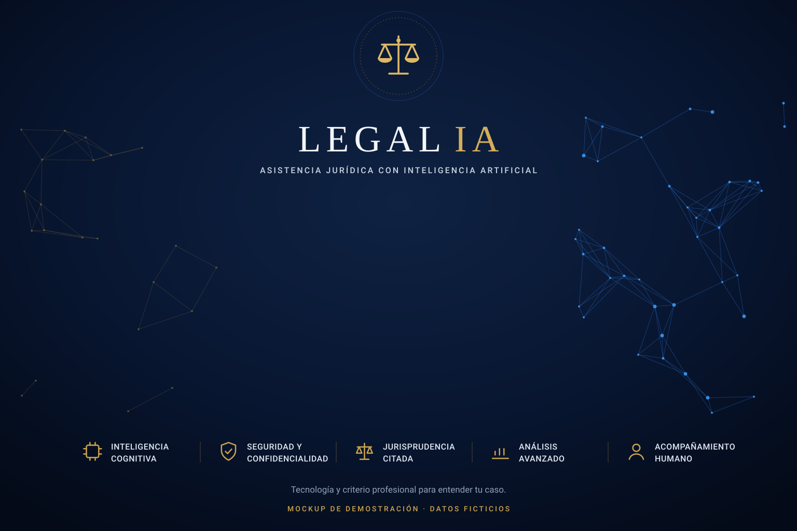

Panel de control
Centro de operaciones jurídicas inteligentes

Cuéntame tu situación con tus palabras. Analizaré cómo han resuelto los tribunales casos parecidos y te explicaré tus opciones. Puedes adjuntar documentos: contrato, nóminas, cartas, resoluciones…
Centro de operaciones jurídicas inteligentes